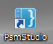
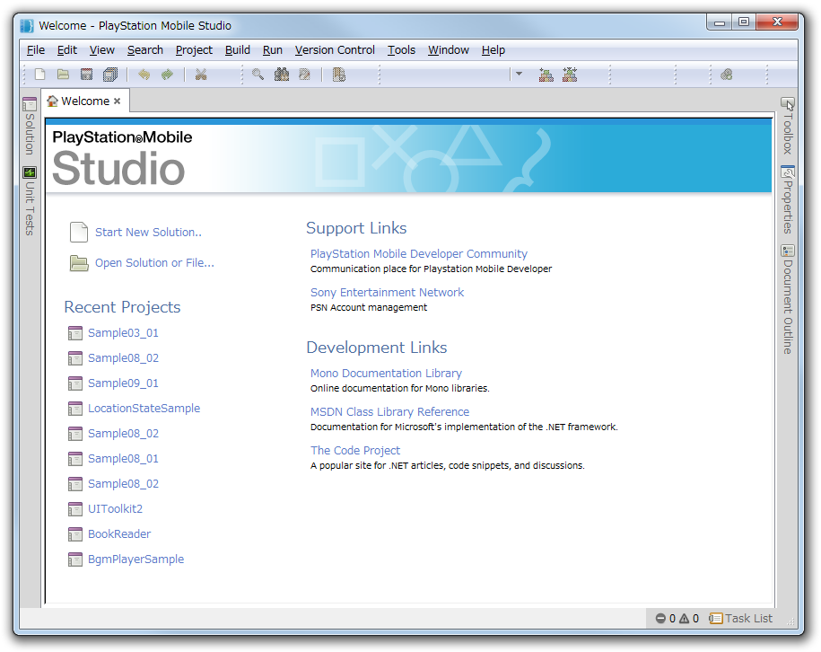
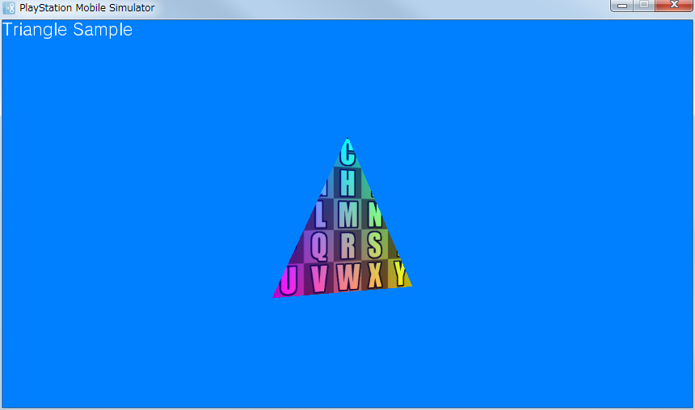

この文書では、PSM SDKインストール後、最初におこなう設定について説明します。
ここでは統合開発環境である PSM Studio の設定を行います。
※ アンチウィルスソフトをオンにしていると、実行に必要なexeファイルをアンチウィルスソフトが削除してしまう場合がありますのでご注意ください。
まず、デスクトップに配置されているPSM Studioのアイコンをダブルクリックして起動します。
PSM Studioを起動すると以下の画面が現れます。

ここでは サンプルを用いて、PSMアプリケーションをビルドし、実行する方法を説明します。
まず、ソリューションファイルを開きます。
ソリューションファイルとは、プロジェクトの構成を記述したファイルで、拡張子にslnがついています。
PSM Studioのメニュー - [File] - [Open] を選択し、ダイアログから sample/Graphics/TriangleSample を選択し、 TriangleSample.sln を開いてください。
Sampleはデフォルトで以下の場所にインストールされています。
- Windows XPの場合: "C:/Documents and Settings/All Users/Documents/PSM/"
- Windows 7の場合: "C:/Users/Public/Documents/PSM/"
※ 開発用PCの言語設定が英語の場合、「Yen」の文字は「バックスラッシュ」で表示されます。

PSM Studioのメニュー - [Build] - [Build All] を選択する、もしくはF8キーを押すと、ビルドを実行します。
ビルド結果のログをみるには、ウィンドウ左下の Build successful の部分をクリックし、[Build Output]ボタンを押してください。

ウィンドウ左下にBuild successfulと表示されたら、ビルド成功です。
ビルドが成功したのを確認したら、ビルドされたPSMアプリケーションを実行してみましょう。
まず、どのプラットフォームで実行するかを指定します。
最初はWindowsで実行してみましょう。
- マウスカーソルをツールバーの領域に置き、右クリックし、PSMにチェックをいれてドロップダウンリストを表示します。

- ドロップダウンリスト コントロールで [PlayStation Mobile Simulator] を選択します。
- メニュー - [Run] - [Debug] を選択、もしくは F5キーを押すと、アプリケーションが起動します。
アプリケーションが出力する文字列は PSM Studioの[Application Output] ウィンドウに出力されます。
※ Application Outputウィンドウは メニュー - [View] - [Pads] - [Application Output]で表示します。
- アプリケーションを終了するには、ウィンドウ右上の×ボタン、もしくは Shift + F5 キーを押してください。